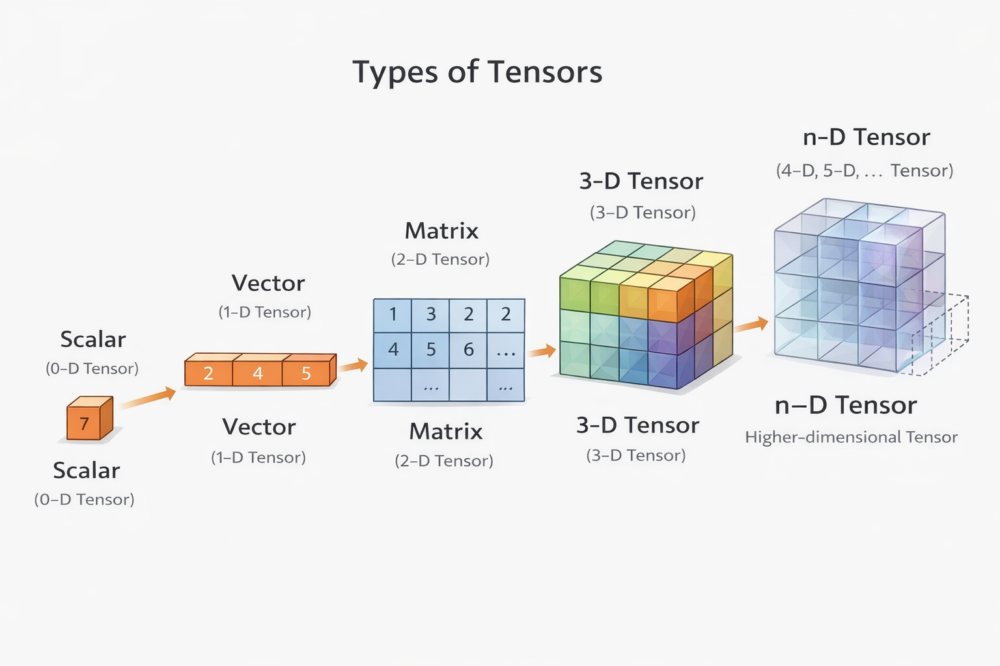

Learning Objectives
Introduction
Now that your PyTorch environment is installed and verified, we can focus on tensors in more detail, as they are the core data structure used across machine learning and deep learning workflows.
We will move from simple tensor forms to higher-dimensional representations, then examine datatypes and typecasting so you can work with tensors more confidently in later model-building lessons.
Tensors
Behind every modern AI system, key technical and ethical concerns ultimately connect back to how information is represented, processed and acted upon. Decisions about bias, transparency and alignment are shaped by the data an AI system sees and the way that data is structured internally. To understand how AI models learn from data and why certain limitations arise, it is useful to look more closely at the mathematical objects used to represent information inside these systems. One of the most fundamental of these objects is the tensor.
Imagine you need to describe five people. You might choose to describe them with data attributed to each person. For example height, weight, age and gender. If we proceed, we could format this information into a table with five rows and four columns:
| Height | Weight | Age | gender | |
|---|---|---|---|---|
| A | 170 | 78 | 30 | 1 |
| B | 165 | 50 | 24 | 0 |
| C | 180 | 88 | 28 | 1 |
| D | 181 | 87 | 30 | 1 |
| E | 166 | 78 | 20 | 0 |
We can then format this data into a matrix, as follows:
$$
\left(
\begin{matrix}
170 & 78 & 30 & 1 \\
165 & 50 & 24 & 0\\
180 & 88 & 28 & 1\\
181 & 87 & 30 & 1\\
166 & 78 & 20 & 0\
\end{matrix}
\right)
$$
This matrix is a tensor. In this case, it is a two-dimensional tensor where each row corresponds to an individual and each column corresponds to a measured attribute. In deep learning, any matrix that contains all the necessary data can also be referred to as a tensor.
A tensor is a mathematical object that generalises scalars, vectors and matrices as higher dimensions. In practice, a tensor is an n-dimensional array of numerical values (not dissimilar to a NumPy array), where the number of dimensions (the rank of the tensor) determines its structure; ranging from a single number (a scalar), to a 1-dimensional vector, a 2-dimensional matrix, or higher-dimensional data. In machine learning and deep learning contexts, tensors are used to represent and manipulate data such as images, time series, text embeddings and model parameters in a consistent and efficient way.
AI's unifier
Thinking in terms of tensors provides a unifying way to describe how diverse forms of data are handled within modern AI systems. Whether working with tables of measurements, images comprising individual pixels or strings of text, these different data types can all be expressed as tensors of varying dimensionality. This common representation allows the same mathematical operations and computational tools to be applied across very different problems, forming the foundation on which modern machine learning and deep learning methods are built.
Tensors vs. NumPy arrays
PyTorch tensors are conceptually very similar to NumPy arrays, and each can often be converted back and forth into the other, with minimal loss or disruption. However, tensors can support additional features such as GPU acceleration and automatic differentiation - advantages that NumPy arrays do not possess.
Understanding the relationship between tensors and NumPy arrays can help to bridge traditional scientific computing workflows with modern deep learning pipelines.
Automatic differentiation is one of PyTorch’s defining features; it contains an automatic differentiation system known as autograd. Autograd allows PyTorch to automatically compute gradients of tensor operations, a facet of the package that is essential for training neural networks using optimisation algorithms such as gradient descent. In practice, this means that PyTorch can track operations performed on tensors and compute derivatives without the user needing to do this manually.
Images as tensors
As we move into code examples, we can begin to explore tensors in a real-world setting. As we have previously stated, the role of tensors in an AI model is to represent real-world data in a numerical form that computers can store, manipulate and learn from. This means that images, text, audio and tabular data are all ultimately converted into tensors before they are processed by an AI model.
When it comes to images, these can be represented as a tensor with shape [3, 224, 224], where the three dimensions correspond to [colour_channels, height, width]. In this case, the image has three colour channels (red, green and blue), a height of 224 pixels and a width of 224 pixels. Each value within the tensor represents the intensity of a particular colour at a specific pixel location.

In tensor terminology, this image is a 3-dimensional tensor, with one dimension for colour channels and two dimensions for spatial information. Understanding how images are structured in this way is essential for working with computer vision models, but before diving deeper, we will start by creating and manipulating simple tensors directly in code.
If you previously completed the Data Handling module of our course, you will note that we would have previously represented an image as (height, width, channel count). This representation of images as a tuple, in this order, is referred to as channels-last convention. It is often used natively in image files, NumPy arrays and plotting libraries (such as matplotlib).
Our reference above to images in the (channel count, height, width) is referred to as the channels-first convention, and is often preferred by libraries such as PyTorch, and is used across other GPU-optimised tensor operations and a handful of popular deep learning models.
Types of tensors
Nearly every operation in PyTorch involves creating, transforming or computing tensors, and much of the framework is built around a specific class: torch.Tensor. For this reason, it is worth becoming familiar with how tensors are defined and manipulated early on.
Importing PyTorch for this notebook
import torch
print(f"PyTorch version: {torch.__version__}")PyTorch version: 2.5.1+cpu
As a short preparatory exercise, you are encouraged to spend around 10 minutes reading through the official PyTorch documentation for torch.Tensor. This is not intended to be read line-by-line or learned, but rather to build familiarity with the terminology and the kinds of operations that PyTorch supports. You may return to this documentation at any point as a reference.
Scalars
The simplest tensor we can create is a scalar. A scalar is a single numerical value and, in tensor terminology, it is referred to as a zero-dimensional tensor. Despite its simplicity, a scalar is still a tensor and supports the same underlying operations as higher-dimensional tensors.
# Scalar
scalar = torch.tensor(7)
print(f"{scalar}, {type(scalar)}", sep="\n")7, <class 'torch.Tensor'>
The printed value of scalar above is tensor(7).
That means although scalar is a single number, it is still of type torch.Tensor.
We can check the dimensions of a tensor using the ndim attribute.
As single values, it might be easy to wonder the role scalars have in an AI model. They can serve many purposes: from holding information such as the learning rate of a model, to its loss value (how well or poorly it is performing on a given dataset). They can also be used to store the values of individual hyperparameters (such as number of epochs) and metrics (such as accuracy, precision and recall). While they are simple in having a single dimension, and a single value, scalars often serve important roles in running, evaluating and improving AI models.
Vectors
Next, let's create a vector. A vector is a one-dimensional tensor that can contain multiple numerical values. Unlike a scalar, which represents a single quantity, a vector allows us to represent several related measurements together in a structured way.
For example, a vector such as [3, 2] could be used to describe the number of [leaves, petals] on a flower. Extending this idea, a vector with the values [3, 2, 5] could represent [leaves, petals, seeds]. Each position in the vector, in this case, corresponds to a specific attribute, and the ordering of values gives them meaning, within the context of a vector.
The key idea is that vectors provide a flexible way to represent collections of related data. This same principle extends to higher-dimensional tensors, which allow increasingly complex data structures to be represented in a consistent numerical form.
Using the example above, we can create a tensor of type vector, using torch.tensor:
# Vector
vector = torch.tensor([3, 2, 2])
print(f"{vector}, {type(vector)}", sep="\n")tensor([3, 2, 2]), <class 'torch.Tensor'>
Matrices
Moving up the hierarchy of tensor types, let's now consider matrices. A matrix is a two-dimensional tensor, which allows us to represent multiple related vectors together in a structured way. While a vector can describe a single object using multiple values, a matrix can describe multiple objects that share the same set of attributes.
Let's take an example of representing two flowers. The first flower has 3 leaves, 2 petals and 2 seeds, while the second flower has 4 leaves, 3 petals and 1 seed. Each flower can be represented as a vector of measurements, and these vectors can be stacked together to form a matrix:
\begin{pmatrix}
3 & 2 & 2 \\
4 & 3 & 1
\end{pmatrix}
In this matrix representation, each row corresponds to a flower, and each column corresponds to a specific attribute (leaves, petals and seeds). Matrices are commonly used to represent tabular data, where multiple observations are described by the same set of features; they form a natural bridge between vectors and higher-dimensional tensors.
# Matrix
matrix = torch.tensor([[3, 2, 2],
[4, 3, 1]])
print(f"{matrix}, {type(matrix)}", sep="\n")tensor([[3, 2, 2],
[4, 3, 1]]), <class 'torch.Tensor'>
3-dimensional tensors
Moving further up the hierarchy again, we arrive at 3-dimensional tensors. A 3-dimensional tensor extends the idea of a matrix in the same way that a matrix extends a vector: it allows us to represent multiple matrices stacked together along a new dimension.
Where a matrix is a collection of vectors, a 3-D tensor is a collection of matrices. This additional dimension can be used to represent different contexts, conditions or groupings of the same type of data. For example, in our flower dataset, a matrix might describe multiple flowers at a single time point, while a 3-dimensional tensor could represent measurements of those flowers taken across multiple days or different experimental conditions.
In practice, 3-dimensional tensors are commonly encountered when working with structured data such as images with colour channels, sequences of measurements over time, or grouped observations. Each dimension adds a new axis along which the data varies, while preserving a consistent internal structure. This ability to represent increasingly complex data in a systematic way is what makes tensors such a powerful abstraction in machine learning and deep learning.
# 3-dimensional tensor
tensor_3d = torch.tensor([[[3, 2, 2],
[4, 3, 1],
[6, 3, 4]]])
print(f"{tensor_3d}, {type(tensor_3d)}", sep="\n")tensor([[[3, 2, 2],
[4, 3, 1],
[6, 3, 4]]]), <class 'torch.Tensor'>
N-dimensional tensors
Beyond three dimensions, tensors continue to scale in the same consistent way. Each additional dimension introduces a new axis along which the data varies.
4-dimensional tensors, for example, are commonly used to represent batches of 3-dimensional data, such as collections of images, while 5- and higher-dimensional tensors appear in contexts that involve additional structure, such as time, depth and/or experimental conditions. Although these higher-dimensional tensors may be harder to visualise, they follow exactly the same principles as scalars, vectors and matrices, providing a unified framework for representing increasingly complex data in machine learning and deep learning.
The diagram below aims to conceptualise and illustrate all the tensor types that we covered, above.

Indexing and slicing tensors
Once tensors are created, we usually need to retrieve specific parts of them. Indexing lets us access one element or one row, while slicing lets us select ranges such as whole columns. This is a core skill for preparing data before model training.
x = torch.tensor([[10, 20, 30],
[40, 50, 60]])
print("First row:", x[0])
print("Second column:", x[:, 1])
print("Single element (row 2, col 3):", x[1, 2])
First row: tensor([10, 20, 30]) Second column: tensor([20, 50]) Single element (row 2, col 3): tensor(60)
Reshaping tensors
In practical workflows, the same data often needs to be rearranged into different shapes. Reshaping changes the structure of a tensor without changing the underlying values, as long as the total number of elements stays the same.
x = torch.arange(12)
print("Original:", x)
print("Original shape:", x.shape)
reshaped = x.reshape(3, 4)
print("\nReshaped:\n", reshaped)
print("New shape:", reshaped.shape)
Original: tensor([ 0, 1, 2, 3, 4, 5, 6, 7, 8, 9, 10, 11])
Original shape: torch.Size([12])
Reshaped:
tensor([[ 0, 1, 2, 3],
[ 4, 5, 6, 7],
[ 8, 9, 10, 11]])
New shape: torch.Size([3, 4])
Tensor operations
Element-wise operations are fundamental in tensor workflows. PyTorch lets you perform arithmetic between tensors and between a tensor and a scalar using standard mathematical operators.
a = torch.tensor([1, 2, 3])
b = torch.tensor([4, 5, 6])
c = 10
print(a + b)
print(a + c)
print(a * b)
print(a * c)
print(a / b)
tensor([5, 7, 9]) tensor([11, 12, 13]) tensor([ 4, 10, 18]) tensor([10, 20, 30]) tensor([0.2500, 0.4000, 0.5000])
Initialising tensors
PyTorch provides helper functions for common tensor initialisation patterns. These are used frequently when setting up model inputs, masks or parameter values.
size = 2, 3
zeros = torch.zeros(size)
ones = torch.ones(size)
random_uniform = torch.rand(size)
print("Zeros:\n", zeros)
print("\nOnes:\n", ones)
print("\nRandom uniform:\n", random_uniform)
Zeros:
tensor([[0., 0., 0.],
[0., 0., 0.]])
Ones:
tensor([[1., 1., 1.],
[1., 1., 1.]])
Random uniform:
tensor([[0.4817, 0.1834, 0.6718],
[0.6350, 0.5799, 0.7942]])
Tensor data types
PyTorch supports a wide range of tensor datatypes, each of which determines how values are stored in memory and how numerical operations are performed. A full list is available in the official PyTorch documentation, but in practice only a subset of these datatypes are commonly used in machine learning and deep learning.
Different datatypes are optimised for different use cases. Some are primarily intended for CPU-based computation, while others are designed to take advantage of GPU hardware.
As noted earlier in this resource, seeing torch.cuda in PyTorch code specifically indicates that a tensor or operation is being placed on an NVIDIA GPU using CUDA. This does not apply to all GPUs. Apple Silicon devices use Metal Performance Shaders (MPS), accessed via torch.backends.mps, while AMD GPUs rely on different support, depending on the platform.
In all cases, the underlying idea is the same: tensors can be placed on specialised hardware to accelerate computation, but the API used depends on the GPU vendor and platform.
Feel free to make a note of the table below and refer back to it as needed when selecting datatypes in later exercises.
| Datatype | Bits | Type | CPU / GPU | Typical Use | Notes |
|---|---|---|---|---|---|
torch.float32 (torch.float) |
32 | Floating point | CPU & GPU | Default datatype for training neural networks | Good balance of precision, speed, and memory |
torch.float16 (torch.half) |
16 | Floating point | GPU (limited CPU support) | Mixed-precision training | Faster and uses less memory, but lower numerical precision |
torch.float64 (torch.double) |
64 | Floating point | CPU & GPU | Scientific computing, high-precision calculations | Slower and more memory-intensive |
torch.bfloat16 |
16 | Floating point | GPU (select hardware) | Mixed-precision training | More stable than float16 for some models |
torch.int8 |
8 | Integer | CPU & GPU | Quantised models, storage | Very memory-efficient, limited numeric range |
torch.int16 |
16 | Integer | CPU & GPU | Specialised numeric tasks | Less commonly used in deep learning |
torch.int32 |
32 | Integer | CPU & GPU | Counters, indices | Often used internally |
torch.int64 (torch.long) |
64 | Integer | CPU & GPU | Class labels, indexing | Required for many PyTorch indexing operations |
torch.bool |
1 | Boolean | CPU & GPU | Masks, logical operations | Stores True / False values |
Floating point datatypes
The most commonly used datatype in PyTorch is:
torch.float32(also written astorch.float)
PyTorch also supports other floating point precisions:
torch.float16(ortorch.half)
torch.float64(ortorch.double)
The table comprises a more complete list of the different tensor data types.
Integer datatypes
In addition to floating point numbers, PyTorch supports several integer datatypes, including 8-bit, 16-bit, 32-bit and 64-bit integers (for example torch.int8, torch.int16, torch.int32 and torch.int64).
An integer is a whole number such as 7, whereas a floating point number includes a decimal component, such as 7.0.
Integer tensors are often used for:
- class labels
- indices
- counters
- categorical data
Precision and performance trade-offs
The reason for having multiple datatypes is tied to precision in computing, which refers to how much numerical detail is used to represent a value. Higher-precision datatypes can represent numbers more accurately, but they require more memory and computational effort.
In deep learning, models perform an enormous number of numerical operations. Using higher precision everywhere can be unnecessarily expensive, while lower precision can improve speed and reduce memory usage. This leads to a trade-off:
- Higher precision
- Lower precision
Modern deep learning workflows often balance these trade-offs carefully, for example by combining multiple datatypes within the same model.
Typecasting tensor data
You can explicitly control the datatype of a tensor using the dtype parameter when creating it. As we have done with base Python data types in our Python Fundamentals module, using this keyword argument when instantiating an instance of class torch.tensor constitutes typecasting input data explicitly into your chosen data type.
In the code cell below, we demonstrate typecasting tensor data:
x_float32 = torch.tensor([1, 2, 3], dtype=torch.float32)
x_float16 = torch.tensor([1, 2, 3], dtype=torch.float16)
x_int64 = torch.tensor([1, 2, 3], dtype=torch.int64)
print("Tensor:", x_float32, "| dtype:", x_float32.dtype)
print("Tensor:", x_float16, "| dtype:", x_float16.dtype)
print("Tensor:", x_int64, "| dtype:", x_int64.dtype)Tensor: tensor([1., 2., 3.]) | dtype: torch.float32 Tensor: tensor([1., 2., 3.], dtype=torch.float16) | dtype: torch.float16 Tensor: tensor([1, 2, 3]) | dtype: torch.int64
Summary
In this notebook, we established what tensors are and why they act as a common representation for different data types in AI. We moved through scalar, vector, matrix and higher-dimensional examples in PyTorch, then practised indexing, slicing, reshaping and common tensor operations. We also examined tensor datatypes, their practical trade-offs and explicit typecasting with dtype. Together, these ideas form the core foundation needed to read and write PyTorch model code more confidently in the lessons that follow.